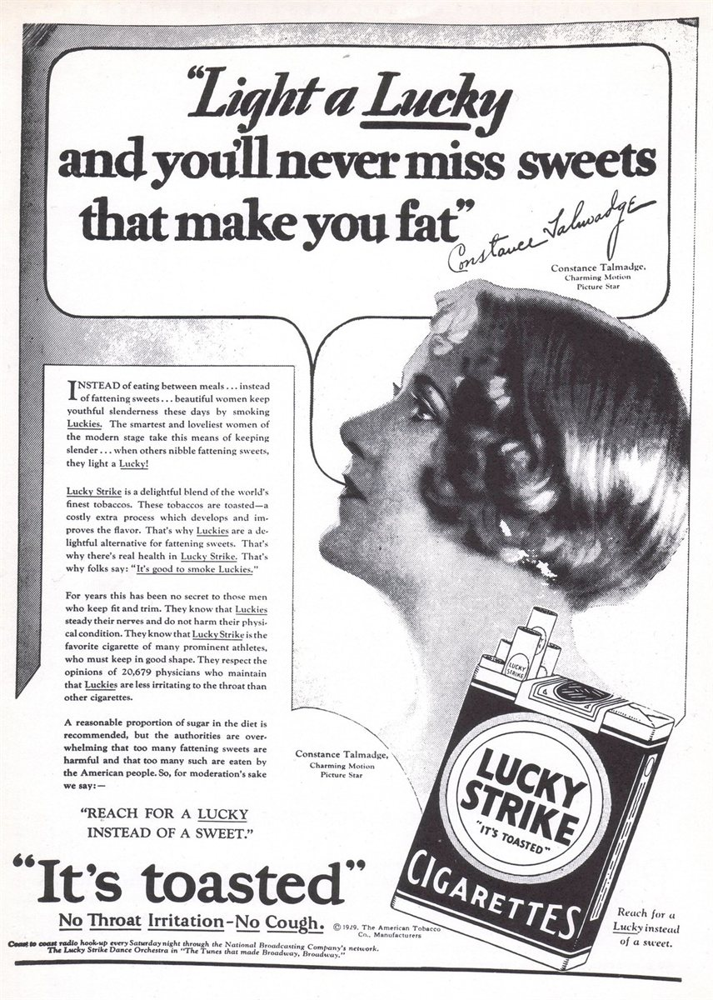
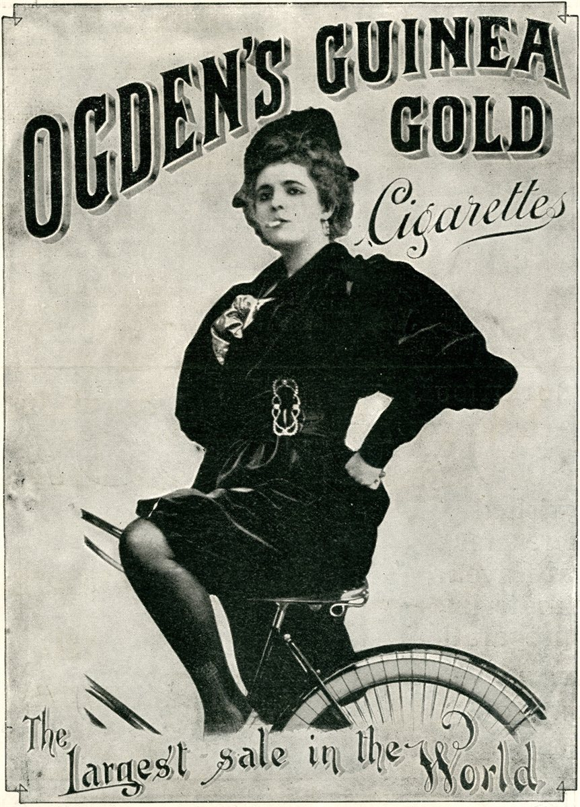

Arquitectos del deseo Cómo las marcas construyen tus ideas
No todo lo que deseas nació en ti. Fue diseñado por otras personas hace décadas, y por algoritmos. Persuasión, ética y poder: el ensayo completo.
Bernays rediseñó el significado de un objeto.
En 1929, un grupo de mujeres caminó por la Quinta Avenida fumando. Estaban encendiendo «antorchas de la libertad».
Al día siguiente, los periódicos de todo el país publicaron la imagen. En menos de una década, el tabaquismo femenino se normalizó en Estados Unidos. Un mercado entero fue creado de la nada.
Ese es el trabajo de un arquitecto del deseo. No vender un producto. Construir el mundo en el que ese producto tiene sentido.

La cronología de la persuasión
La persuasión no es una invención del marketing digital, ni de las agencias del siglo XX. Tiene una genealogía larga y sorprendentemente coherente.
Cada figura en esta línea del tiempo añadió una capa a lo que hoy llamamos comunicación persuasiva — y entender esa historia es la única forma de usarla con consciencia.
Transformó la persuasión de «intuición» en metodología científica. En su tratado Retórica estableció que todo discurso persuasivo opera en tres dimensiones simultáneas — y que ignorar cualquiera de ellas es debilitarse.
No era publicista, pero le dio a la persuasión su herramienta más poderosa: el subconsciente. Reveló que la mayoría de las decisiones humanas no son racionales, sino que vienen de deseos reprimidos y miedos profundos. A partir de Freud, persuadir dejó de ser «explicar beneficios» y pasó a ser «prometer la satisfacción de deseos ocultos».
Antes de Hopkins, la publicidad era arte. Después de él, se convirtió en experimento. En Scientific Advertising (1923) estableció que todo anuncio debe ser probado, medido y justificado por resultados — no por intuición creativa. Fue el primero en usar cupones de descuento para rastrear conversiones, en probar títulos alternativos y en tratar el copywriting como ciencia. Vendió el Listerine fabricando el miedo social al mal aliento — y creó un mercado de la nada. Su legado directo: cada test A/B que haces hoy.
Sobrino de Freud, aplicó las teorías psicológicas a las masas y creó las relaciones públicas modernas. Su concepto central: para vender un producto, no ataques al cliente — cambia la cultura que lo rodea. Hizo que las mujeres fumaran asociando el cigarrillo a la libertad femenina, llamándolos «antorchas de la libertad». Fabricó el hábito americano del desayuno con huevos y tocino usando médicos como voceros pagados.
El genio que entendió que el mercado tiene etapas. Su libro Breakthrough Advertising es la biblia del copywriting moderno. Clasificó al público en cinco niveles de consciencia — desde el cliente que no sabe que tiene un problema hasta el que está listo para comprar. Su contribución central: la persuasión no es «gritar más fuerte». Es decir exactamente lo que el cliente necesita escuchar según lo que ya sabe.
El psicólogo social que codificó la persuasión en siete principios universales. Sus estudios demostraron que el cerebro humano usa «atajos» cognitivos para decidir rápido — y que esos atajos pueden identificarse, comprenderse y, por lo tanto, usarse de forma consciente o explotarse de forma manipuladora.
Representan la síntesis moderna: transformaron los principios de Freud, Bernays y Schwartz en sistemas replicables de ventas — embudos, copywriting directo, ofertas irresistibles. Lo que era arte se volvió proceso. Y lo que era proceso se convirtió en una industria multimillonaria de cursos que enseñan exactamente lo que Bernays hizo el siglo pasado.
El legado de Aristóteles que todo copywriter usa sin saberlo
Todo acto persuasivo opera en tres dimensiones simultáneas. No es posible separar una de otra sin debilitar el argumento.
La credibilidad de quien habla. Si la audiencia no confía en el emisor, el argumento muere antes de empezar. Por eso los influencers construyen audiencia antes de vender — y por eso el respaldo médico de Bernays funcionó.
La conexión emocional con el estado del oyente. La lógica convence, pero la emoción mueve a la acción. Todo anuncio eficaz opera en esta capa — incluso los que parecen puramente informativos.
La prueba racional — datos, argumentos, evidencias. Necesario para justificar la decisión que la emoción ya tomó. El comprador necesita el logos para sentirse inteligente después de haber actuado por pathos.
El problema moderno — visible especialmente en la enseñanza del copywriting — es absolutizar solo uno de estos elementos. Quien enseña únicamente técnicas emocionales ignora la credibilidad. Quien vende solo datos ignora lo que realmente mueve a las personas. Y quien se enfoca solo en autoridad sin sustancia construye un castillo de papel. Aristóteles sabía que los tres deben estar presentes.
Qué es la persuasión, en realidad
Nadie acusa a un abogado de manipulación por presentar los mejores argumentos a favor de su cliente.
La persuasión es preparación cuidadosa, encuadre adecuado, presentación de pruebas y sintonía emocional con el público. Es el mecanismo por el cual la verdad se hace conocida.
Esta visión sostiene prácticas centrales de la sociedad moderna: el sistema jurídico, la terapia, la propia economía de mercado.
Y sin embargo, esta misma tradición produjo a Hopkins fabricando ansiedades y a De Beers reescribiendo rituales sociales enteros.
¿Dónde está la línea? La verdad es inherentemente buena — pero no toda persuasión sirve a la verdad.
Es imposible no influir
Antes de responder dónde está la línea, es necesario destruir una ilusión cómoda: la de que existe una posición neutral.
Toda interacción humana implica influencia. Hasta el silencio influye. No responder un mensaje comunica algo. Negarse a aprender persuasión no te hace más ético — solo te hace menos consciente del impacto que ya causas.
El supermercado no es neutral. Nunca lo fue.
La pregunta no es si vamos a influir. Es cómo. Y sobre todo: hacia dónde.

«No creamos demanda, solo atendemos demanda existente»
El desodorante y el sudor. Antes de las campañas publicitarias de principios del siglo XX, el sudor no era considerado un problema social grave para la mayoría de las personas. Fue la publicidad la que construyó la norma de que oler a sudor era inaceptable, vergonzoso, motivo de exclusión social — y después vendió el desodorante para resolver la ansiedad que ella misma creó. Claude Hopkins hizo lo mismo con el mal aliento cuando vendió el Listerine.
El anillo de diamante. El anillo de diamante en el compromiso no es una tradición secular. Es una campaña de De Beers de 1947 — «un diamante es para siempre» — que reescribió un ritual social entero. Antes de eso, el diamante era una piedra cara entre otras. La campaña asoció la piedra a la permanencia del amor y creó una norma cultural tan sólida que hoy parece haber existido desde siempre. Si le preguntas a alguien de dónde viene la costumbre, probablemente dirá «siempre fue así». No lo fue.
El desayuno americano. ¿El desayuno con huevos y tocino? Bernays fue contratado por una empresa de bacon en los años 1920 y convenció a médicos para declarar públicamente que un desayuno sustancioso era esencial para la salud. Los periódicos lo publicaron. Un hábito cultural fue fabricado con el ropaje de consejo médico.
El marketing no atiende demanda. También la crea. Y quien niega eso toma peores decisiones, porque nunca va a examinar honestamente lo que está haciendo.

Fabricar el problema para vender la solución
La influencia más sofisticada no responde a una necesidad existente. La construye desde cero.
Hopkins popularizó el término médico «halitosis» para el mal aliento. Antes de su campaña, el mal aliento no era considerado un problema social grave ni motivo de vergüenza o exclusión. Fue la publicidad la que construyó esa norma. No hubo coerción: nadie obligó a nadie a comprar. Pero sí se fabricó metódicamente una inseguridad para vender la solución. El mercado multimillonario del enjuague bucal nació de una ansiedad diseñada.
A principios del siglo XX, el sudor no se consideraba un problema social grave. Fue la publicidad la que construyó la norma de que oler a sudor era motivo de vergüenza y exclusión social. El patrón es idéntico al de Hopkins: identificar una condición humana normal, redefinirla como defecto social y ofrecer el producto como solución.
¿Somos responsables de lo que las personas terminan deseando? Si la demanda fue fabricada, ¿puede considerarse legítima la persuasión que la satisface?
Coerción, manipulación y persuasión
Para salir del moralismo vago y entrar en territorio útil, hacen falta definiciones precisas. Existen tres formas fundamentales de influir en el comportamiento humano.
Elimina completamente la elección mediante amenaza o fuerza física. «Compra o publico tus datos.» Robo. Violencia. Universalmente inmoral. Punto final.
Distorsiona la capacidad de decisión sin usar fuerza. Opera a través de emociones fabricadas, información omitida o estados afectivos inducidos artificialmente. La elección existe formalmente — pero fue comprometida.
Presenta argumentos, evidencias y encuadres para que la otra parte pueda aceptar o rechazar libremente. Mejora o mantiene la capacidad de decisión de quien recibe la influencia.
La mayoría de las discusiones sobre ética en marketing se bloquean porque las personas saltan directamente de la coerción a la persuasión — como si cualquier cosa que no sea violencia fuera automáticamente aceptable. Pero existe todo un territorio entre los dos.
Los algoritmos: manipulación sin intención
El caso más revelador de la manipulación contemporánea es aquel donde no existe una intención humana identificable de perjudicar a alguien.
No fue inventado por un ejecutivo malévolo. Explota el efecto por defecto — la tendencia humana a aceptar la opción estándar en vez de tomar una decisión activa. Para no ver el siguiente episodio, tienes que actuar. Para verlo, no tienes que hacer nada. La asimetría de esfuerzo es deliberada y calculada para aumentar el consumo.
No te muestra lo que «quieres» — te muestra lo que maximiza la probabilidad de que sigas viendo. Lo que maximiza la retención es frecuentemente el contenido más emocionalmente intenso: thrillers, dramas con cliffhangers, reality shows. No necesariamente lo que considerarías más valioso a la mañana siguiente. Las miniaturas se optimizan con tests A/B para maximizar clics — no para representar fielmente el contenido.
El criterio definitivo
Después de 2.400 años de historia, desde la Grecia antigua hasta los algoritmos de Silicon Valley, llegamos al punto que realmente importa. El criterio ético de la persuasión no es «¿hubo o no coerción?». Es otro:
Si no puedes revelar el mecanismo, es manipulación.
Nike puede decir abiertamente: «asociamos nuestros productos a atletas de élite para que sientas que el producto pertenece al universo de la excelencia, aunque lo uses para caminar en el parque». La campaña sobrevive a esa revelación.
El influencer que alquila un carro de lujo para vender un curso no puede decir: «alquilamos este carro para que asocies mi éxito con el resultado que tendrás con mi curso, sabiendo que este carro no es mío y que nunca apliqué este método fuera del contexto de vender el método». Eso destruye la campaña, porque la campaña es la ilusión.
El único criterio que importa
Después de 2.400 años de historia — de Aristóteles a los algoritmos, de la antorcha de la libertad de Bernays al autoplay de Netflix — llegamos al único criterio filosófico que resiste el tiempo.
No es «¿hubo coerción?». No es «¿lo dije con buenas intenciones?». No es «¿nadie fue obligado?». Esos criterios son demasiado fáciles de pasar y demasiado cómodos para quien quiere justificarse.
¿Esta influencia deja a la persona en mejor o peor posición para decidir lo que genuinamente le conviene?
Un arquitecto del deseo que construye mal no te da herramientas — te las quita. Fabrica urgencias que no existen. Planta miedos que no tenías. Construye modelos aspiracionales que sabe que son falsos. Y cuando descubres el mecanismo, lo que sientes no es admiración por la técnica — es la sensación exacta de haber sido usado.
Todos los grandes nombres de esta historia — Aristóteles, Freud, Hopkins, Bernays, Schwartz, Cialdini — comprendieron algo que la mayoría de los marketeros modernos evita admitir: influir es inevitable, pero la dirección de esa influencia es una decisión moral.
No puedes no influir. Pero sí puedes elegir si construyes o si destruyes la capacidad de decisión de quien te escucha.
Fuentes y pensadores
Retórica: ethos, pathos, logos
La interpretación del inconsciente
Scientific Advertising (1923)
Propaganda (1928) · Crystallizing Public Opinion
Breakthrough Advertising (1966)
Influence: The Psychology of Persuasion (1984)
The Ultimate Sales Letter · serie No B.S.
DotCom Secrets · Expert Secrets · Traffic Secrets